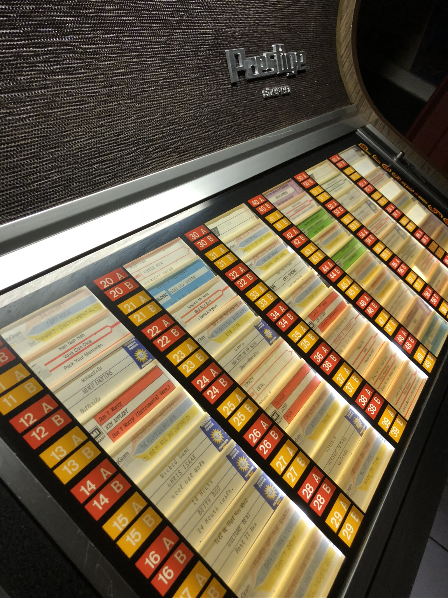

Radio Jukebox
A classic jukebox transformed into an interactive event machine, combining original mechanical controls with digital audio, prize logic, DMX lighting and a configurable web application.
Overview
Radio Jukebox is an interactive event installation based on a real classic jukebox.
Instead of simply selecting a record, visitors use the original jukebox buttons to trigger a digital experience. Depending on the programmed configuration, a selection can play a predefined song or station jingle, or trigger a winning sequence with audio and lighting effects.
The original physical interaction remains an important part of the experience: visitors still stand in front of a real jukebox and make their selection using its original controls, while a completely new electronic system works behind the scenes.
Project details
The objective is to turn a classic jukebox into a flexible interactive attraction for radio events, public appearances, fairs and promotional activities.
The original selection buttons are connected to custom interface electronics. Their input is interpreted digitally so that each button combination can be assigned to an individual action.
A selection might simply start a specific song or jingle. Other selections can be configured as winning combinations. When a winning choice is detected, the system plays a dedicated audio cue and starts a programmed lighting effect inside the jukebox.
DMX is integrated directly into the project. This allows the jukebox lighting to become part of the interaction rather than remaining static.
An external DMX output also makes it possible to control additional event lighting outside the jukebox. A winning event could therefore trigger not only the lights inside the machine, but also moving lights, LED fixtures or other DMX-compatible equipment around the event stand.
Original jukebox controls
The existing selection buttons remain the main user interface and are translated into digital commands by custom electronics.
Programmable selections
Each jukebox selection can be assigned to a song, jingle, event action or other predefined media content.
Prize logic
Individual combinations can be defined as winning selections so that the jukebox also works like an interactive slot machine.
Audio feedback
Winning events can trigger dedicated jingles, voice messages or other audio cues through the internal audio system.
Internal DMX lighting
Lighting effects inside the jukebox can react to selections and create a dedicated celebration sequence when someone wins.
External DMX output
Additional event lights can be connected so that the complete surrounding installation reacts to the jukebox.
Web configuration
A dedicated local web application allows event staff to assign songs, jingles, prizes and lighting sequences without modifying the underlying software.
Offline operation
The installation is designed to operate independently from the internet, making it suitable for event locations with unreliable or unavailable connectivity.
System architecture
The system is planned around two separate control layers.
A Linux-based mini PC acts as the central application computer. It handles audio playback, the local web interface, event logic, media storage and configuration.
A separate microcontroller-based I/O interface handles the original jukebox buttons and other physical signals. This keeps the time-critical hardware input independent from the operating system and provides a more reliable interface to the vintage electronics.
Communication between the microcontroller and the mini PC can be handled over USB serial. The mini PC receives a clean digital selection code rather than having to read the jukebox wiring directly.
This separation also makes troubleshooting easier: the hardware interface, application logic, audio system and lighting system can be tested independently.
Configuration & operation
The complete event setup can be programmed through a dedicated web application.
During configuration, the operator can assign media files to jukebox selections, define winning combinations and select which DMX scene should be triggered for each event.
The system can provide its own local Wi-Fi network. Event staff can connect a laptop, tablet or phone directly to the jukebox and open the configuration interface in a browser.
A second workflow is planned through USB. A prepared USB drive can contain new media files and configuration data, allowing the jukebox to be updated without requiring network access.
Technology
The central system is planned around a compact Linux mini PC. Compared with a small microcontroller or Raspberry Pi alone, the mini PC provides sufficient performance and storage for audio, web applications, configuration management and future extensions.
A dedicated Arduino or ESP32-class controller can handle the original jukebox inputs and communicate with the Linux system over USB or serial.
For DMX, a dedicated USB-to-DMX interface can provide reliable output to both the internal jukebox lighting and the external DMX connector.
The software architecture can remain modular: the web interface controls the configuration, the playback engine handles audio, the hardware service receives button selections and the lighting service sends the appropriate DMX scene.